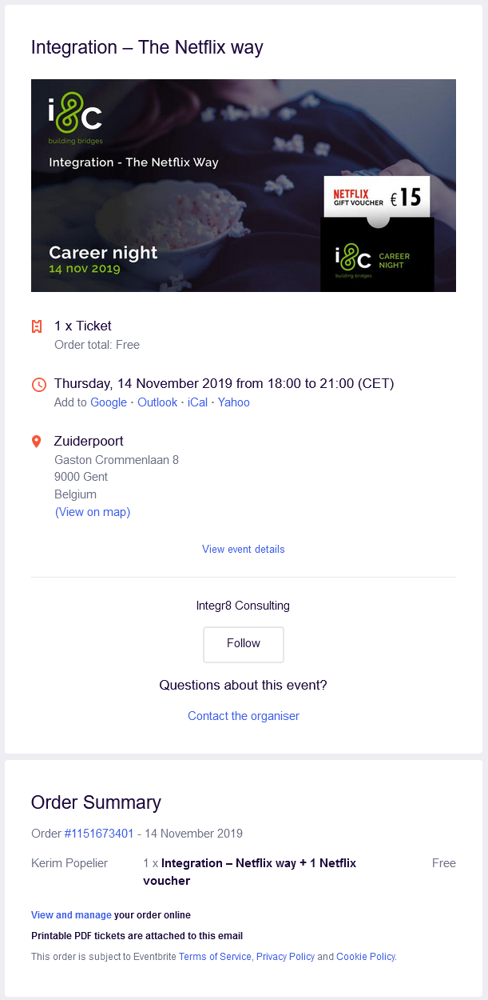

Integr8 Consulting: Integration - The Netflix way
Date and duration:
14 November 2019
18:00 - 21:00
Proof:

Description
Dit was een beetje van een last minute event omdat ik hier maar van hoorde de dag zelf van Mattijs Step. Omdat het me echter interessant leek had ik besloten van toch te gaan. Het event zelf ging over hoe Netflix met microservices werkt om zo hun volledige systeem aan te bieden. Daar ik niet wist hoe Netflix ten werk gaat was dit een interessant gegeven. Om de avond af te sluiten kregen we ook nog broodjes en een Netflix voucher.